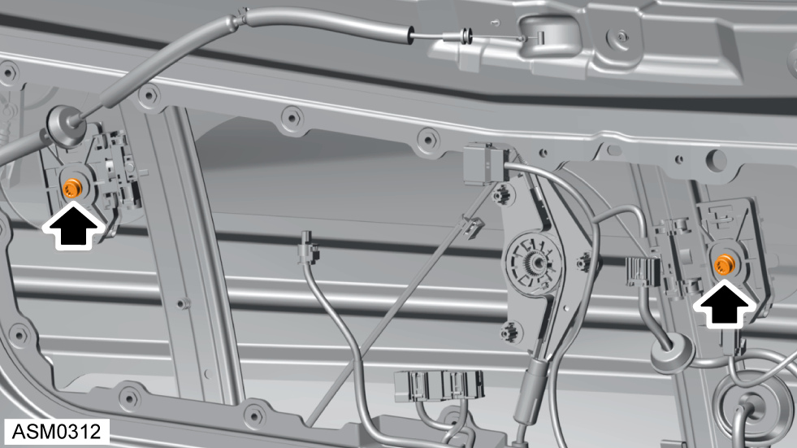
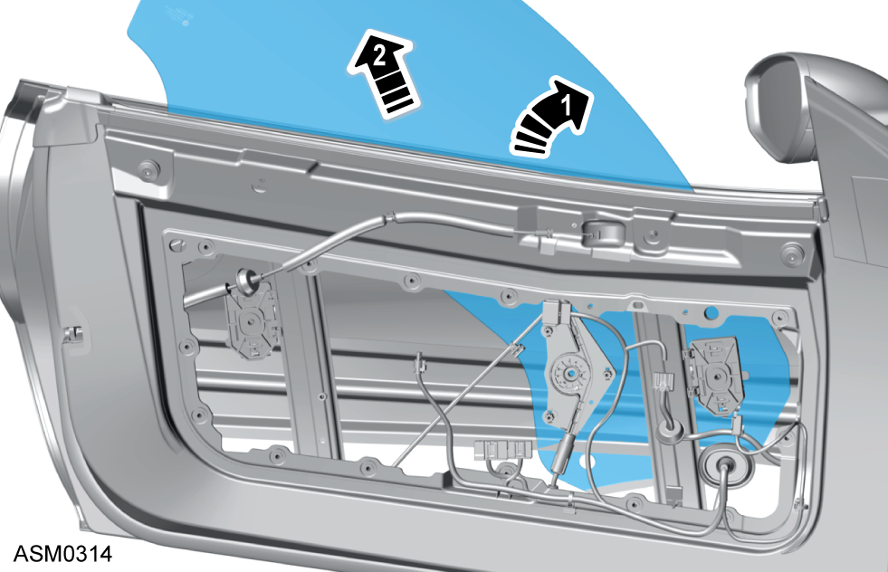

Door Glass - Left Side
Print
Operation Code: 11.01.05-02
Removal
- Remove door water deflector panel - left side. Refer to procedure.
- Position door glass to gain access to door glass fixings.

- Remove screws (x2) securing door glass to regulator.
- Carefully release door glass from retaining clamps (x2) on regulator.

- Carefully tilt door glass and remove from door.
Installation
- Installation is the reverse of removal procedure except the following:
- Check door glass alignment and reset window one touch facility. Refer to procedure.